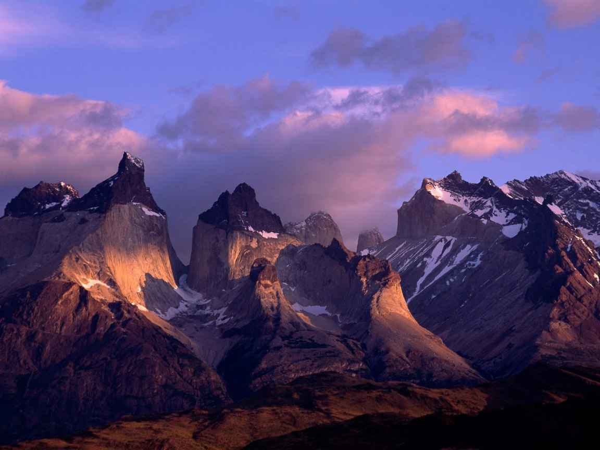

А́нды, А́ндские Кордилье́ры — самая длинная (9000 км) и одна из самых высоких (гора Аконкагуа, 6961 м) горных систем Земли, окаймляющая с севера и запада всю Южную Америку; южная часть Кордильер. Местами Анды достигают ширины свыше 500 км (наибольшая ширина — до 750 км — в Центральных Андах, между 18° и 20° ю.ш.). Средняя высота — около 4000 м.
Анды являются крупным межокеанским водоразделом; к востоку от Анд текут реки бассейна Атлантического океана (в Андах берут начало сама Амазонка и многие её крупные притоки, а также притоки Ориноко, Парагвая, Параны, река Магдалена и реки Патагонии), к западу — реки бассейна Тихого океана (преимущественно короткие).
Анды служат важнейшим в Южной Америке климатическим барьером, изолирующим территории к западу от Главной Кордильеры от влияния Атлантического океана, к востоку — от влияния Тихого океана. Горы лежат в 5 климатических поясах (экваториальном, субэкваториальном, тропическом, субтропическом и умеренном) и отличаются (особенно в центральной части) резкими контрастами в увлажнении восточных (подветренных) и западных (наветренных) склонов.
